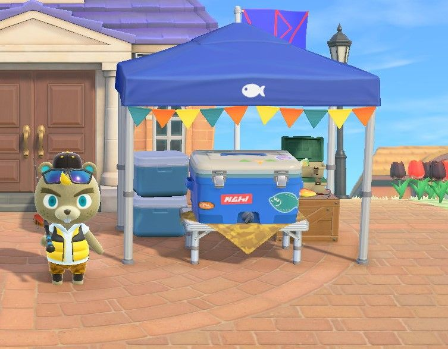
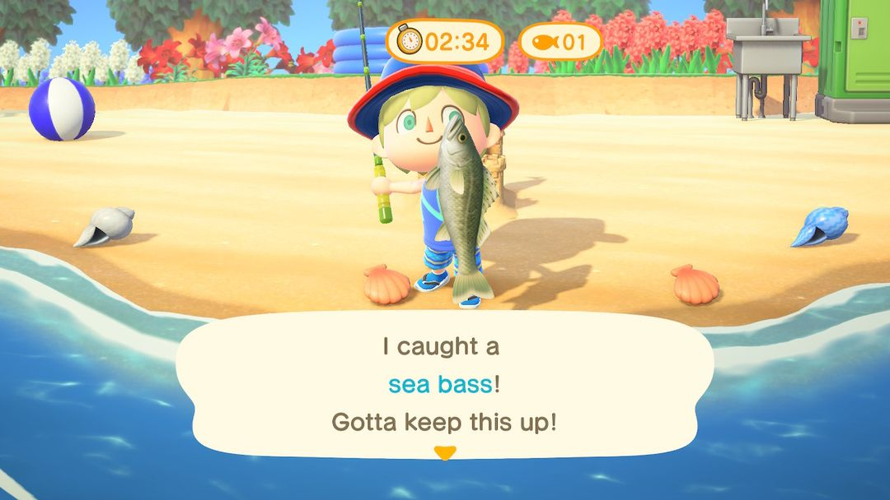
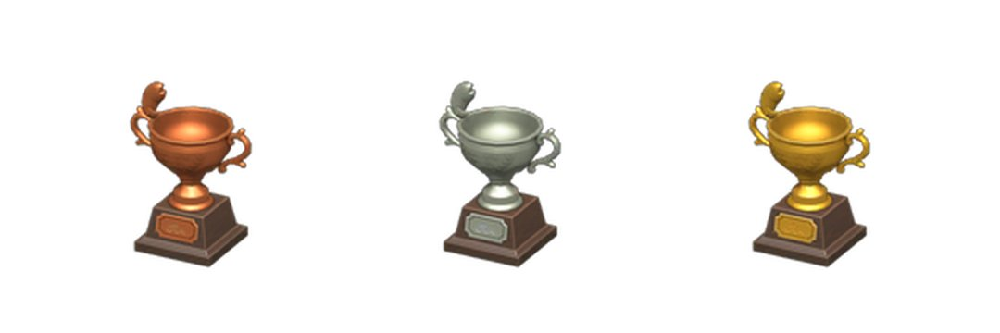

釣魚大會：哪天舉辦、怎麼計分、換什麼
俞司廷一季來一次，三分鐘一局，只算條數
釣魚大會一年舉辦四場，1、4、7、10 月的第二個星期六，南北半球同一天。比賽當天俞司廷會在廣場搭起帳篷，三分鐘一局，釣上來一條算一條，魚大魚小、稀不稀有都一樣記 1 分。存夠分數能找他換釣魚主題的家具和衣服，總分到了 100、200、300 還會寄來銅、銀、金三座獎盃。
想多拿分，要事先準備的是魚飼料，最好再多帶一根釣竿；能約到其他島的朋友一起來更好，報名費全免，每局還多 5 分。下面依當天的順序說明：在哪報名、怎麼計分、和朋友怎麼配合、怎麼釣得快，最後是獎品。
01哪天舉辦、在哪裡
釣魚大會固定在 1 月、4 月、7 月、10 月的第二個星期六，南半球和北半球是同一天。遊戲裡依季節分別叫冬季、春季、夏季、秋季釣魚大會。比賽前一週左右，服務處旁邊的公布欄會貼出通知，看到了就該把魚飼料準備起來了。
主辦人俞司廷當天在服務處前的廣場搭帳篷。上午 9 點開始報名，下午 6 點截止。截止以後他也不急著走，一直待到晚上 8 點，這段時間還能找他賣魚、換獎品。
| 場次 | 日期 |
| 冬季釣魚大會 | 每年 1 月第二個星期六 |
| 春季釣魚大會 | 每年 4 月第二個星期六 |
| 夏季釣魚大會 | 每年 7 月第二個星期六 |
| 秋季釣魚大會 | 每年 10 月第二個星期六 |
每年確切是哪天，可以翻動森圈圈的活動日曆。

比賽當天，俞司廷在廣場等你，釣到的魚都放進他身後的保冷箱（圖：Nookipedia）
02報名和計分
找俞司廷選「參加大會」就算報名。當天第一局免費，之後每局 500 鈴錢。下午 6 點前可以一直報名，次數不限，只要鈴錢夠，釣幾局都行。
一局 3 分鐘。釣上來的魚直接進帳篷下的保冷箱，不佔口袋，口袋塞滿了也沒關係，手上有一根釣竿就能上場。
計分很簡單：一條魚 1 分，鱸魚和矛尾魚算的分數一樣。一局釣到 3 條以上，額外再加 2 分。也就是說比的全是三分鐘內能釣上幾條，魚大魚小、稀不稀有都不影響分數，手快比運氣重要。
每局結束後要先把保冷箱清空，才能開始下一局。清空的辦法有兩種：整箱賣給俞司廷，或是把魚挑出來帶走。俞司廷收魚的價格是 Nook商店的 1.5 倍，不打算留的魚直接賣給他最划算。

比賽中，畫面上方是剩餘時間和已經釣到的條數（英文版畫面）（圖：Nookipedia）
03約朋友一起釣
有其他島的客人一起參加時，俞司廷不收報名費，釣幾局都免費。所有人同時開始計時，開局不會等任何人，報名前大家先各自站到水邊，免得開局了還在往海邊跑。
除了各自的分數，這一局所有人加起來釣滿 5 條，每人再加 5 分，不管你自己釣了幾條都照樣拿。幾個人一起釣，5 條很容易湊到，等於每局白白多 5 分。
注意只要還有一個人的保冷箱沒清空，下一局就開始不了。每局結束，大家都先回帳篷把魚賣掉或帶走，再一起報名。
04怎麼釣得快
三分鐘很短，大半時間都花在找魚影上，所以省時間的關鍵是別滿島找魚。
先準備好魚飼料。沙灘上冒水的小洞能挖出蛤蜊，拿去 DIY 就是魚飼料。往水面撒一份，很快就會冒出一個魚影，站在原地就能接著甩竿。一局三分鐘，手上準備 10 份以上比較保險。
找一段筆直的海岸。海裡魚影多，站在一段又長又直的沙灘邊甩竿最順手。河道彎彎曲曲、碼頭位置又窄，魚影常常冒在不好下竿的地方。
看到魚就釣，別挑。小魚也是 1 分，看到小魚影不用跳過，挑來挑去反而浪費時間。
多帶一根釣竿。比賽中釣竿不會壞，但耐用度照樣在扣，可能一局剛結束它就剛好斷掉，下一局手邊有備用的就不用臨時去做。
小提示想留下的魚，例如還沒捐給博物館的、圖鑑裡缺的，賣之前先從保冷箱裡挑出來，不然會跟著整箱一起賣掉。
05獎品和獎盃
每存到 10 分，就能找俞司廷換一件獎品。獎品一共 13 種，隨機給，13 種都拿過一遍之後才會出現重複的。當天沒用完的分數會保留，下一場繼續用。
13 種獎品分別是：釣竿架、有型保冷箱、釣魚包、魚兒斜背包、魚兒T恤、魚兒雨傘、魚兒門牌、魚兒地毯、魚兒壁紙、魚拓、魚乾、錨裝飾品、魚兒棒。
其中魚兒棒是一根魔法棒，揮一下就能換上衣櫃裡存好的一整套衣服。
獎盃不用拿分數去換。累計分數到了 100、200、300，俞司廷會分別寄來魚兒銅獎盃、魚兒銀獎盃、魚兒金獎盃。換獎品花掉的分數、以前幾場存的分數都算在累計裡，所以換獎品不會拖慢拿獎盃的進度。

從左到右：魚兒銅獎盃、魚兒銀獎盃、魚兒金獎盃（圖：Nookipedia）
小提示一個人一局釣 10 條左右，加上滿 3 條的 2 分，大約 12 分，存到 300 分得二十多局。和朋友一起釣，每局多 5 分又不收報名費，能快上不少。
動森圈圈 · iOS App 和微信小程式都搜「動森圈圈」